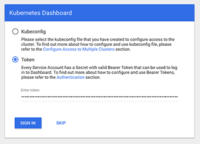
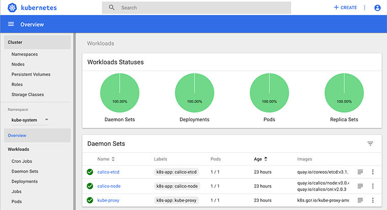

How to setup a non-production single node Kubernetes cluster
Contents
I wanted to get my hands on Kubernetes to test the build and deployment process of my Golang project.
As it is only for development and testing purposes, I decided to go with a spare server and to setup only a single node Kubernetes instance.
To be honest I first tried to spwan 4 VMs with Proxmox and then setup a full 3-nodes cluster but the overhead was clearly not worth it.
Strong warning: This tutorial is for testing purposes only. Security is not covered in this article and as the cluster is running on a single node, HA is out of scope.
1. Basic server setup
The first thing was to deploy an Ubuntu LTS 16.04 on that machine. As Kubernetes requires 17.03 (or maybe up to 17.12 but not 18.03), going for Ubuntu 16.04 is the right choice as Kubernetes repositories does not provide 17.03 for Ubuntu 17.10
SSH configuration
Even if security is not my focus there, changing the SSH defaut port and allowing only pubkeys authentication is always a good thing:
mkdir .ssh
echo "<your public key>" > .ssh/authorized_keys
Let’s edit the SSH config file:
sudo vim /etc/ssh/sshd_config
Port 2207
PermitRootLogin prohibit-password
PubkeyAuthentication yes
PasswordAuthentication no
UFW
You should always run ufw on your box. Let’s open only ssh and enable it:
sudo ufw allow 2207/tcp
sudo ufw enable
2. Install docker and kubeadm
First let’s setup docker 17.03:
sudo apt-get update
sudo apt-get install -y \
apt-transport-https \
ca-certificates \
curl \
software-properties-common
curl -fsSL https://download.docker.com/linux/ubuntu/gpg | apt-key add -
sudo add-apt-repository \
"deb https://download.docker.com/linux/$(. /etc/os-release; echo "$ID") \
$(lsb_release -cs) \
stable"
sudo apt-get update && apt-get install -y docker-ce=$(apt-cache madison docker-ce | grep 17.03 | head -1 | awk '{print $3}')
Next we need to install kubectl and kubeadm:
sudo apt-get update && apt-get install -y apt-transport-https
curl -s https://packages.cloud.google.com/apt/doc/apt-key.gpg | apt-key add -
sudo cat <<EOF >/etc/apt/sources.list.d/kubernetes.list
deb http://apt.kubernetes.io/ kubernetes-xenial main
EOF
sudo apt-get update
sudo apt-get install -y kubelet kubeadm kubectl
Edit /etc/systemd/system/kubelet.service.d/10-kubeadm.conf and add the following argument: --cgroup-driver=cgroupfs
We need to restart kubelet to apply this change:
sudo systemctl daemon-reload
sudo systemctl restart kubelet
3. Create the kubernetes cluster
Kubernetes API uses the 6443 port so let’sopen that in UFW:
ufw allow 6443/tcp
We will now use kubeadm to bootstrap the cluster:
sudo kubeadm init --pod-network-cidr=192.168.0.0/16 --apiserver-cert-extra-sans=195.154.104.52
The pod-network-cidr is required for Calico, the virtual pod network.
apiserver-cert-extra-sans is used to add our public ip to our certificate so we can login from our local machine without a warning.
Wait for the process to complete and copy the generated configuration to your user:
mkdir -p $HOME/.kube
sudo cp -i /etc/kubernetes/admin.conf $HOME/.kube/config
sudo chown $(id -u):$(id -g) $HOME/.kube/config
Once kubectl has its configuration, we don’t need to sudo anymore and we can install the Calico network:
kubectl apply -f https://docs.projectcalico.org/v3.0/getting-started/kubernetes/installation/hosted/kubeadm/1.7/calico.yaml
As we are using a single node cluster, we need to allow pods to bedeployed on the master:
kubectl taint nodes --all node-role.kubernetes.io/master-
4. Local setup
Install kubectl: brew install kubectl
Copy your kubernetes configuration to your local machine: mkdir ~/.kube && scp user@kub:.kube/config ~/.kube
You should now be able to run:
➜ kubectl get pods --all-namespaces
NAMESPACE NAME READY STATUS RESTARTS AGE
kube-system calico-etcd-7rzs9 1/1 Running 0 23h
kube-system calico-kube-controllers-5449fdfcd-mlrlf 1/1 Running 0 23h
kube-system calico-node-jzlbp 2/2 Running 0 23h
kube-system etcd-dck 1/1 Running 0 23h
kube-system kube-apiserver-dck 1/1 Running 0 23h
kube-system kube-controller-manager-dck 1/1 Running 0 23h
kube-system kube-dns-86f4d74b45-n6c4r 3/3 Running 0 23h
kube-system kube-proxy-jhx5r 1/1 Running 0 23h
kube-system kube-scheduler-dck 1/1 Running 0 23h
kube-system kubernetes-dashboard-7d5dcdb6d9-lg26s 1/1 Running 0 23h
5.Kubernetes Dashboard
Let’s setup the Kubernetes Dashboard:
kubectl apply -f https://raw.githubusercontent.com/kubernetes/dashboard/master/src/deploy/recommended/kubernetes-dashboard.yaml
The kubectl proxy command open a local port (8001) to the cluster, taking care of authenticating you with the certificate in your config.
The dashboard is now deployed but we need a ServiceAccount to use it. Create the following saccount.yaml file:
apiVersion: v1
kind: ServiceAccount
metadata:
name: admin-user
namespace: kube-system
---
apiVersion: rbac.authorization.k8s.io/v1beta1
kind: ClusterRoleBinding
metadata:
name: admin-user
roleRef:
apiGroup: rbac.authorization.k8s.io
kind: ClusterRole
name: cluster-admin
subjects:
- kind: ServiceAccount
name: admin-user
namespace: kube-system
Load that configuration:
kubectl create -f saccount.yaml
Each account has a token used as a password. Grab that token with:
kubectl -n kube-system describe secret $(kubectl -n kube-system get secret | grep admin-user | awk '{print $1}')
You can now access the dahsboard with the following URI: http://localhost:8001/api/v1/namespaces/kube-system/services/https:kubernetes-dashboard:/proxy/
Select the token radio and paste yours:

You arw now connected to your dashboard and you can see all running services by selecting All namespaces in the left select field:

You can now deploy any app you need on that cluster.
Author Guillaume Moigneu
LastMod 2018-04-07